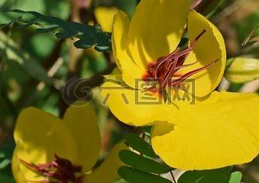

Specie: Chamaecrista fasciculata
Taxonomy: Fabaceae; Caesalpinioideae; Cassia clade; Chamaecrista
Abbr: Cfa
Level: Chromosome
chromosome number: 2n=2X=16

Introduction: Chamaecrista fasciculata, the partridge pea, is a species of legume native to most of the eastern United States. It is an annual which grows to approximately 0.5 meters tall. It has bright yellow flowers from early summer until first frost, with flowers through the entire flowering season if rainfall is sufficient. The flowers are hermaphroditic, although a fraction of plants, less than 5%, do not produce sufficient pollen to reproduce as males. This phenomenon has been studied in a variety of plants as a possible evolutionary step towards dioecy, in which male and female flowers occur on separate plants. C. fasciculata is pollinated only by bees. The flowers have yellow anthers that produce reproductive pollen, and purple anthers that produce food pollen, but no nectar. Long-tongued bees such as bumblebees, honey bees, long-horned bees, and leafcutting bees pollinate the flowers. There are extrafloral nectaries on the leaf stems, which attract a different set of insects: sweat bees, flies, wasps, and ants. It thrives in areas that have been burned recently before declining in number in the following years. It is considered an excellent choice for planting in disturbed areas, as it will quickly cover an area, preventing erosion, while still allowing other plants to become established. It is also grown as an ornamental or for honey production.
Distribution: Alabama, Florida, Illinois, Kansas, Kentucky, Maryland, Massachusetts, Minnesota, Mississippi, Missouri, New Mexico, New York, Oklahoma, Pennsylvania, Rhode I., South Carolina, South Dakota, Tennessee, Texas, Virginia, Wisconsin
Article Title: Phylogenomics reveals multiple losses of nitrogen-fixing root nodule symbiosis